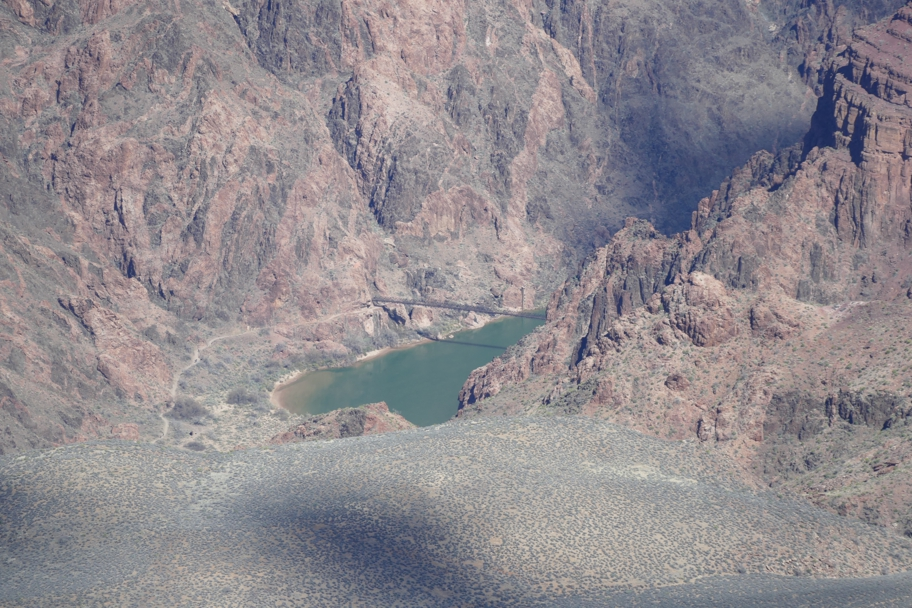

This bridge is a vertical mile deep in the Grand Canyon. Per the National Historic Civil Engineering Landmark plaque at this point, it was built in 1928. It was the only crossing of the Colorado River between Needles, CA and Moab, Utah. It was built on two-ton suspension cables which were carried by men down a seven-mile trail.
Arizona Grand Canyon National Park